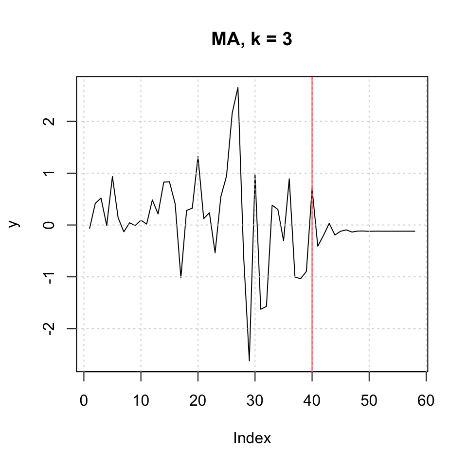

10.2 Case 2
df2 <- read_excel("Data/Exams/Exam2018Case2.xlsx") #Case 2 material10.2.1 Q1
dynamic properties
y.badcalls <- ts(df2[,4],frequency = 24)
tsdisplay(y.badcalls)
Figure 10.17: Visual inspection
Based on the inspection, we may deduce the following:
- It appears as if we have non stationarity - that can be tested with DW or ADF
- It appears as if there is seasonality - that can be tested with decomposition
Testing for stationarity:
adf.test(y.badcalls)##
## Augmented Dickey-Fuller Test
##
## data: y.badcalls
## Dickey-Fuller = -9.5429, Lag order = 12, p-value = 0.01
## alternative hypothesis: stationaryWe see that the data actually is stationary
A test of decomposing is done in the following question.
On the basis hereon, we are able to deduce that the composition is additive
10.2.2 Q2
an appropriate decomposition with explanations on each component
plot(decompose(y.badcalls))Figure 10.18: Decompisition of Bad Calls
We see that there is no trend in the data, but there is clearly seasons, depending on what hour it is.
We also see no cycles.
10.2.3 Q3
linar regression bad calls on the other variables
Checking for stationarity in the explanatory variables
x.pressure <- ts(df2[,2],frequency = 24)
x.windspeed <- ts(df2[,3],frequency = 24)
{print(tsdisplay(x.pressure,lag.max = 500))
print(tsdisplay(x.windspeed,lag.max = 500))}
## NULL## NULL
{print(adf.test(x.pressure))
print(adf.test(x.windspeed))}##
## Augmented Dickey-Fuller Test
##
## data: x.pressure
## Dickey-Fuller = -5.4916, Lag order = 12, p-value = 0.01
## alternative hypothesis: stationary
##
##
## Augmented Dickey-Fuller Test
##
## data: x.windspeed
## Dickey-Fuller = -7.2395, Lag order = 12, p-value = 0.01
## alternative hypothesis: stationaryDespite the visual interpretation showing characteristics that appear to be non stationary, the ADF test show overwhelming evidence to reject the null, hence it is fair to assume, that the data is stationer
fit <- lm(y.badcalls ~ x.pressure + x.windspeed)
summary(fit)##
## Call:
## lm(formula = y.badcalls ~ x.pressure + x.windspeed)
##
## Residuals:
## Min 1Q Median 3Q Max
## -0.70804 -0.20978 0.02901 0.18513 1.07707
##
## Coefficients:
## Estimate Std. Error t value Pr(>|t|)
## (Intercept) 11.486495 1.004297 11.44 <0.0000000000000002 ***
## x.pressure -0.353204 0.033296 -10.61 <0.0000000000000002 ***
## x.windspeed 0.043073 0.001359 31.69 <0.0000000000000002 ***
## ---
## Signif. codes: 0 '***' 0.001 '**' 0.01 '*' 0.05 '.' 0.1 ' ' 1
##
## Residual standard error: 0.2654 on 2013 degrees of freedom
## Multiple R-squared: 0.4803, Adjusted R-squared: 0.4798
## F-statistic: 930.2 on 2 and 2013 DF, p-value: < 0.00000000000000022One could describe this then
10.2.4 Q4
a forecast obtained based on an appropriate smoothing method
HW <- HoltWinters(y.badcalls
,beta = FALSE #No trend
# ,gamma = TRUE #We have seasons #We want it to calculate the optimal
)
HW## Holt-Winters exponential smoothing without trend and with additive seasonal component.
##
## Call:
## HoltWinters(x = y.badcalls, beta = FALSE)
##
## Smoothing parameters:
## alpha: 0.7433923
## beta : FALSE
## gamma: 0.5407147
##
## Coefficients:
## [,1]
## a 1.0597021787
## s1 -0.1794473089
## s2 -0.2712036049
## s3 -0.3205401341
## s4 -0.3207574608
## s5 -0.3321956847
## s6 -0.2810281488
## s7 -0.2685732309
## s8 -0.1190127729
## s9 -0.0124866501
## s10 0.0978011268
## s11 0.1868982608
## s12 0.2035583267
## s13 0.2205927840
## s14 0.1968599641
## s15 0.1681208212
## s16 0.1624518505
## s17 0.1702619587
## s18 0.1919992681
## s19 0.1975399933
## s20 0.1793936233
## s21 0.1453069693
## s22 0.0598995701
## s23 0.0005213328
## s24 -0.1149900150The model is created with seasonality but not trend hence, Holt Winters smoothing.
The function optimize to the optimal parameters.
forecast(HW,h = 24)## Point Forecast Lo 80 Hi 80 Lo 95 Hi 95
## 85.00000 0.8802549 0.7489360 1.0115738 0.6794199 1.081090
## 85.04167 0.7884986 0.6248691 0.9521280 0.5382489 1.038748
## 85.08333 0.7391620 0.5486245 0.9296996 0.4477600 1.030564
## 85.12500 0.7389447 0.5248548 0.9530347 0.4115224 1.066367
## 85.16667 0.7275065 0.4922100 0.9628030 0.3676515 1.087361
## 85.20833 0.7786740 0.5239302 1.0334178 0.3890770 1.168271
## 85.25000 0.7911289 0.5183207 1.0639372 0.3739047 1.208353
## 85.29167 0.9406894 0.6509407 1.2304381 0.4975570 1.383822
## 85.33333 1.0472155 0.7414636 1.3529675 0.5796083 1.514823
## 85.37500 1.1575033 0.8365450 1.4784616 0.6666400 1.648367
## 85.41667 1.2466004 0.9111244 1.5820765 0.7335342 1.759667
## 85.45833 1.2632605 0.9138695 1.6126516 0.7289130 1.797608
## 85.50000 1.2802950 0.9175222 1.6430677 0.7254819 1.835108
## 85.54167 1.2565621 0.8808841 1.6322402 0.6820121 1.831112
## 85.58333 1.2278230 0.8396684 1.6159776 0.6341918 1.821454
## 85.62500 1.2221540 0.8219117 1.6223963 0.6100362 1.834272
## 85.66667 1.2299641 0.8179886 1.6419397 0.5999019 1.860026
## 85.70833 1.2517014 0.8283177 1.6750852 0.6041919 1.899211
## 85.75000 1.2572422 0.8227496 1.6917347 0.5927432 1.921741
## 85.79167 1.2390958 0.7937715 1.6844201 0.5580311 1.920161
## 85.83333 1.2050091 0.7491104 1.6609079 0.5077722 1.902246
## 85.87500 1.1196017 0.6533683 1.5858352 0.4065593 1.832644
## 85.91667 1.0602235 0.5838796 1.5365675 0.3317183 1.788729
## 85.95833 0.9447122 0.4584679 1.4309565 0.2010657 1.688359We see the above produce point forecasts + confidence intervals.
The following plots the forecast
plot(forecast(HW,h = 24),xlim = c(75,87))Figure 10.19: HW forecast smoothing
10.2.5 Q5
Using ARIMA
arima.bc <- auto.arima(y.badcalls)
forecast(arima.bc,h = 24)## Point Forecast Lo 80 Hi 80 Lo 95 Hi 95
## 85.00000 0.8952382 0.7597392 1.0307372 0.6880104 1.102466
## 85.04167 0.7915810 0.6146908 0.9684711 0.5210508 1.062111
## 85.08333 0.6938403 0.4895408 0.8981398 0.3813912 1.006289
## 85.12500 0.6974756 0.4730226 0.9219285 0.3542044 1.040747
## 85.16667 0.7282253 0.4884601 0.9679905 0.3615361 1.094915
## 85.20833 0.8758832 0.6232167 1.1285497 0.4894632 1.262303
## 85.25000 0.8537510 0.5902471 1.1172550 0.4507565 1.256746
## 85.29167 0.9649759 0.6923134 1.2376385 0.5479745 1.381977
## 85.33333 1.0753636 0.7949200 1.3558072 0.6464621 1.504265
## 85.37500 1.2120036 0.9249268 1.4990804 0.7729575 1.651050
## 85.41667 1.3387255 1.0459649 1.6314861 0.8909867 1.786464
## 85.45833 1.3620451 1.0643968 1.6596933 0.9068313 1.817259
## 85.50000 1.3819627 1.0800996 1.6838259 0.9203029 1.843623
## 85.54167 1.3872987 1.0817924 1.6928050 0.9200672 1.854530
## 85.58333 1.3670515 1.0583905 1.6757125 0.8949952 1.839108
## 85.62500 1.3303459 1.0189487 1.6417430 0.8541050 1.806587
## 85.66667 1.2923932 0.9786197 1.6061666 0.8125181 1.772268
## 85.70833 1.2818309 0.9659914 1.5976704 0.7987960 1.764866
## 85.75000 1.2748361 0.9571985 1.5924738 0.7890513 1.760621
## 85.79167 1.2786251 0.9594213 1.5978289 0.7904451 1.766805
## 85.83333 1.2578344 0.9372655 1.5784033 0.7675666 1.748102
## 85.87500 1.1380432 0.8162837 1.4598027 0.6459545 1.630132
## 85.91667 1.0700041 0.7472057 1.3928025 0.5763266 1.563682
## 85.95833 0.9407264 0.6170210 1.2644318 0.4456617 1.435791plot(forecast(arima.bc,h = 24),xlim = c(75,87))
10.2.6 Q6
a forecast combination of the two previously chosen methods and their evaluations
Let us use the HoltWinters smoothing and the arima from q4 and q5.
First we must find out if it is fair to assume, that the models perform equally good. That can be done with Diebold-Mariano test. Where H0: is that the MSE’s are not significantly far from each other.
dm.test(e1 = resid(HW)
,e2 = resid(arima.bc)[25:2016]
,alternative = "two.sided" #Default, but shown for pedogical reasons. meaning that H1 is a two sided test
)##
## Diebold-Mariano Test
##
## data: resid(HW)resid(arima.bc)[25:2016]
## DM = -1.7642, Forecast horizon = 1, Loss function power = 2, p-value =
## 0.07786
## alternative hypothesis: two.sidedWe are not able to reject the null hypothesis, hence the accuracies can be assumed to be the same, hence equally good models.
10.2.6.1 Combined model
Now we can make the combined model, this can be done with two approaches:
- Nelson
- Granger-Ramanathan
comb.df <- as.data.frame(cbind(as.matrix(y.badcalls[25:2016])
,as.vector(HW$fitted[,1])
,as.vector(arima.bc$fitted[25:2016])))
names(comb.df) <- c("y.badcalls","x.HW","x.arima")
combfit <- lm(y.badcalls ~ x.HW + x.arima
,data = comb.df)
summary(combfit) #the coefficients in the regression will give you the weights##
## Call:
## lm(formula = y.badcalls ~ x.HW + x.arima, data = comb.df)
##
## Residuals:
## Min 1Q Median 3Q Max
## -0.91363 -0.04814 -0.00527 0.04445 1.19600
##
## Coefficients:
## Estimate Std. Error t value Pr(>|t|)
## (Intercept) 0.060838 0.007844 7.756 0.0000000000000139 ***
## x.HW 0.693959 0.042933 16.164 < 0.0000000000000002 ***
## x.arima 0.255147 0.044773 5.699 0.0000000138793768 ***
## ---
## Signif. codes: 0 '***' 0.001 '**' 0.01 '*' 0.05 '.' 0.1 ' ' 1
##
## Residual standard error: 0.09884 on 1989 degrees of freedom
## Multiple R-squared: 0.9279, Adjusted R-squared: 0.9278
## F-statistic: 1.28e+04 on 2 and 1989 DF, p-value: < 0.00000000000000022combfcast <- ts(combfit$fitted.values, frequency = 24)
plot(combfcast)
accuracy(combfcast,x = comb.df$y.badcalls)## ME RMSE MAE MPE MAPE
## Test set -0.000000000000000001959061 0.09877032 0.06512255 -0.7175288 5.916592